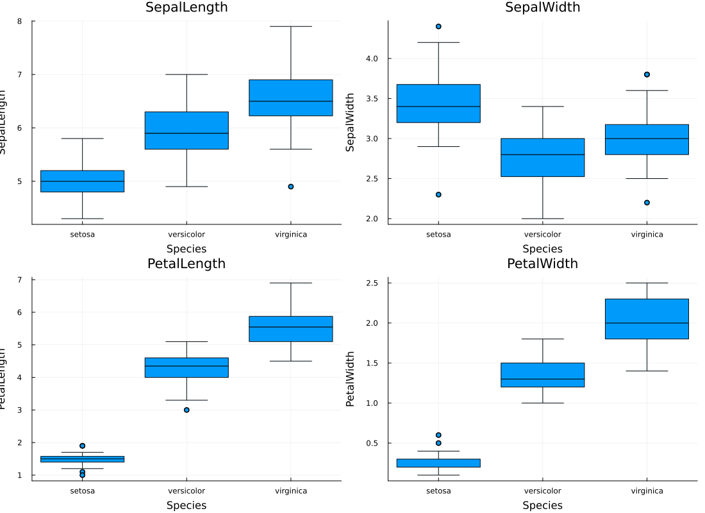
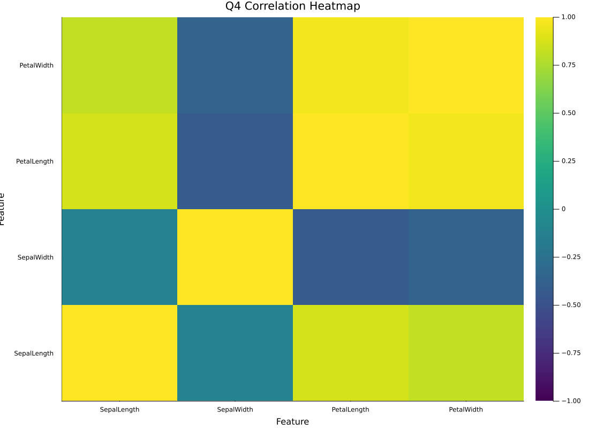
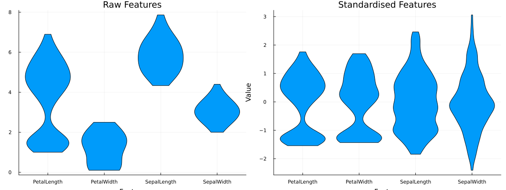
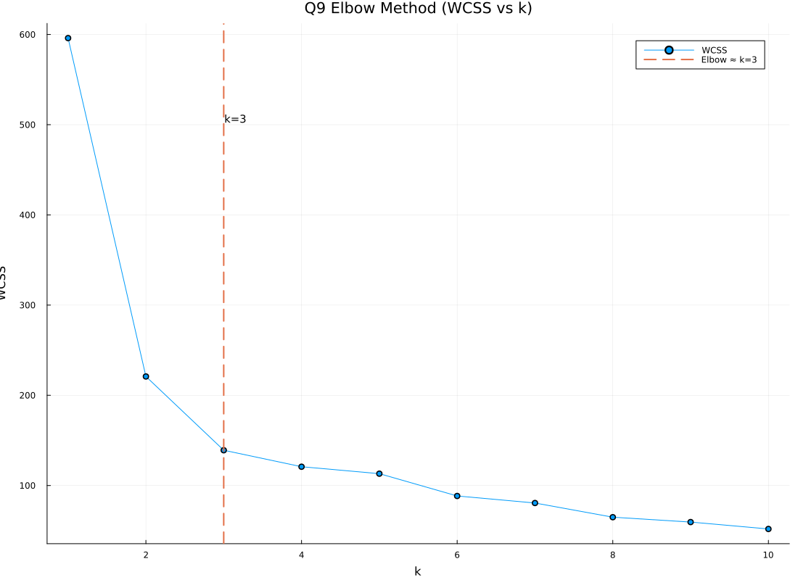
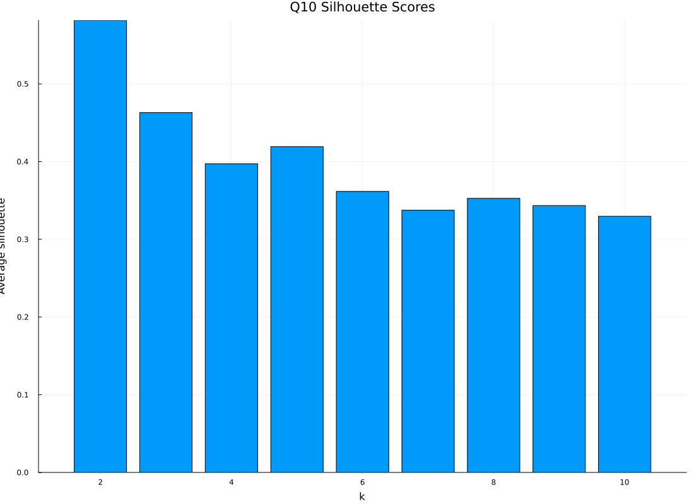
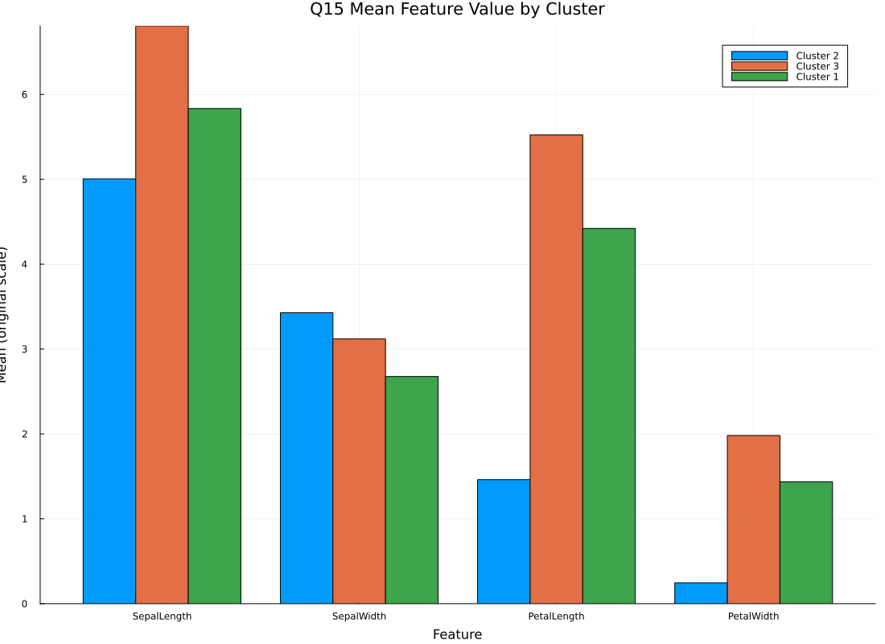

| Feature | Mean | Std | Min | Max |
|---|---|---|---|---|
| SepalLength | 5.8433 | 0.8281 | 4.3 | 7.9 |
| SepalWidth | 3.0573 | 0.4359 | 2.0 | 4.4 |
| PetalLength | 3.7580 | 1.7653 | 1.0 | 6.9 |
| PetalWidth | 1.1993 | 0.7622 | 0.1 | 2.5 |

Feature with greatest separation: PetalLength. It shows the clearest class separation with less overlap among species compared to sepal features. This is supported by its highest between-class variance proportion (eta² ≈ 0.9414), indicating strong discriminatory power.

Most strongly correlated pair: PetalLength and PetalWidth (|r| = 0.9629). This suggests feature redundancy, so dimensionality reduction (e.g., PCA) can capture most variance in fewer components with limited information loss.
| Feature | Mean (Before) | Std (Before) | Mean (After) | Std (After) |
|---|---|---|---|---|
| SepalLength | 5.8433 | 0.8281 | ~0.0 | 1.0 |
| SepalWidth | 3.0573 | 0.4359 | ~0.0 | 1.0 |
| PetalLength | 3.7580 | 1.7653 | ~0.0 | 1.0 |
| PetalWidth | 1.1993 | 0.7622 | ~0.0 | 1.0 |

Raw features have different scales and dispersion, while standardised features are centered near zero with comparable spread. This matters for K-Means because Euclidean distance is scale-sensitive: without standardisation, high-variance features dominate cluster assignments.
K-Means minimises squared Euclidean distances, so features with larger variance contribute disproportionately to inertia. In the raw Iris data, standard deviations are: PetalLength = 1.7653, SepalLength = 0.8281, PetalWidth = 0.7622, SepalWidth = 0.4359. Therefore, unscaled clustering is biased toward larger-spread dimensions (especially PetalLength), reducing balanced contribution across features.
| k | WCSS |
|---|---|
| 1 | 596.0000 |
| 2 | 220.8793 |
| 3 | 139.0992 |
| 4 | 120.8287 |
| 5 | 113.1255 |
| 6 | 88.4012 |
| 7 | 80.5971 |
| 8 | 64.8771 |
| 9 | 59.4748 |
| 10 | 51.8204 |

| Rank | k | Average Silhouette |
|---|---|---|
| 1 | 2 | 0.58175 |
| 2 | 3 | 0.46304 |
| 3 | 5 | 0.41918 |
| 4 | 4 | 0.39719 |
| 5 | 6 | 0.36162 |
| 6 | 8 | 0.35270 |
| 7 | 9 | 0.34342 |
| 8 | 7 | 0.33744 |
| 9 | 10 | 0.32966 |

Elbow analysis optimises compactness by tracking inertia (WCSS) and selecting a point of diminishing returns as k increases. Silhouette analysis optimises both cohesion and separation by comparing each sample’s intra-cluster distance with its nearest neighboring cluster distance. If they conflict for Iris, silhouette is generally more informative because it directly evaluates cluster quality, not just WCSS decline. In this run, elbow indicates k≈3 while silhouette peaks at k=2, but k=3 remains a strong practical choice because Iris is known to contain three species and often one pair (versicolor/virginica) overlaps.
Silhouette requires at least two clusters. For each point, the score uses s(i) = (b(i) − a(i)) / max(a(i), b(i)), where a(i) is average intra-cluster distance and b(i) is average distance to the nearest different cluster. With k=1, no alternative cluster exists, so b(i) is undefined and silhouette cannot be meaningfully computed.
| Cluster | SepalLength | SepalWidth | PetalLength | PetalWidth |
|---|---|---|---|---|
| Std C1 | -0.0114 | -0.8731 | 0.3758 | 0.3101 |
| Std C2 | -1.0112 | 0.8504 | -1.3006 | -1.2507 |
| Std C3 | 1.1635 | 0.1448 | 0.9997 | 1.0266 |
| Orig C1 | 5.8339 | 2.6768 | 4.4214 | 1.4357 |
| Orig C2 | 5.0060 | 3.4280 | 1.4620 | 0.2460 |
| Orig C3 | 6.8068 | 3.1205 | 5.5227 | 1.9818 |

Cluster 1 is most clearly distinguished by petal measurements (PetalLength and PetalWidth), which separate groups more strongly than sepal features. Sepal features vary less consistently across clusters, while petal dimensions provide clearer inter-cluster contrast.